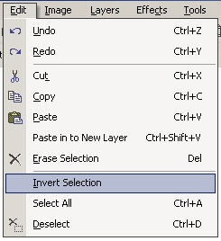

Invert Selection Operation
|
 The Invert Selection Operation (Edit-->Invert Selection) allows the user to select a region using either the Rectangle Select or the Lasso Select and then 'inverting' that selection. In other words, whatever was not selected by the user becomes selected, and the user selected area becomes unselected. |
| In this image, the body of the girl is selected by the user (you can tell by the blue haze). | In this image, the selection was inverted, and then cut. Therefore, the background became selected, and when cut was removed from the canvas leaving only the girl's body. |